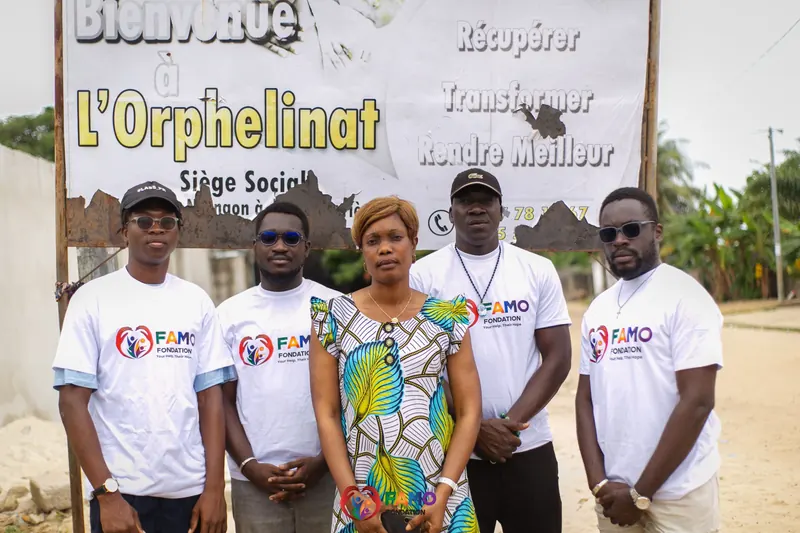
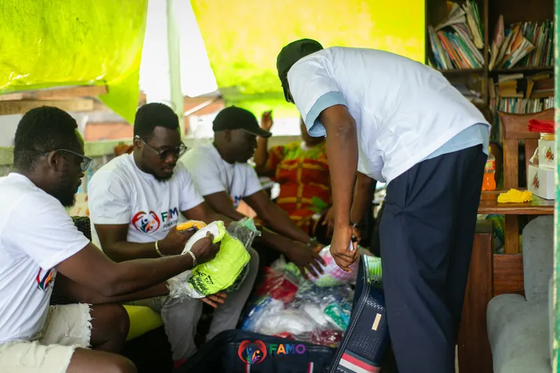
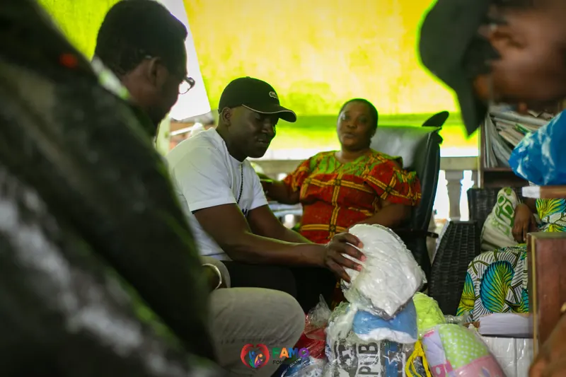
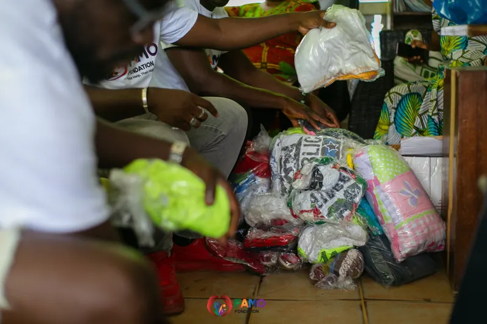

← Accueil
Nos réalisations
Les actions concrètes menées par la fondation depuis 2023, rendues possibles grâce à nos donateurs, partenaires et bénévoles.











Prochaine étape : la construction d'une école
Notre prochain grand chantier ouvrira les portes de l'éducation à encore plus d'enfants. Votre soutien peut en accélérer la réalisation.
Participer au projetUne action, une vie
Chaque don, petit ou grand, soutient nos programmes d'éducation, de santé et de solidarité auprès des familles des zones rurales de Côte d'Ivoire.
Faire un don